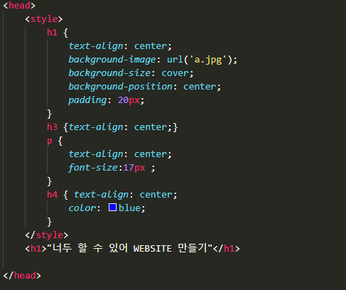

style 태그는 간단히 설명하면 문서나 문서 일부에 대한
스타일 정보를 포함해
style태그는 아까 설명했던 head태그 안에 위치해야 해
style태그는 다양한 부분을 꾸밀 수 있는데 우린 한번 글자 색을 변경해 보자
짠! 파란색으로 바꿔 보았어
이렇게 글자 색을 바꾸려면 글자 쓸 때
사용한 태그를 이용해서 바꿀 수 있어
방금은 headline4를 사용해서
headline4의 글자 색을 바꿔 보았어

사진에서 h4가 headline4를 의미해
사진에서는 h4태그를 이용해서 쓴 글자는 가운데 정렬하고 파란색으로
글자 색을 바꾼 거야
여기서 다른 것을 보면 style태그 안에
다양한 부분을 꾸민 것을 알 수 있어!
우리가 만든 것처럼 배경
색도 바꿀 수 있어
이렇게 style태그를 사용하면 글자를 꾸미거나 문서의 다른
부분을 꾸밀 수 있어
SSWC HOME으로 돌아가기